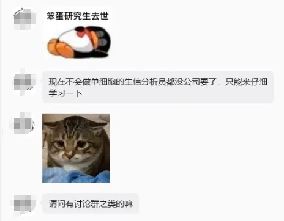
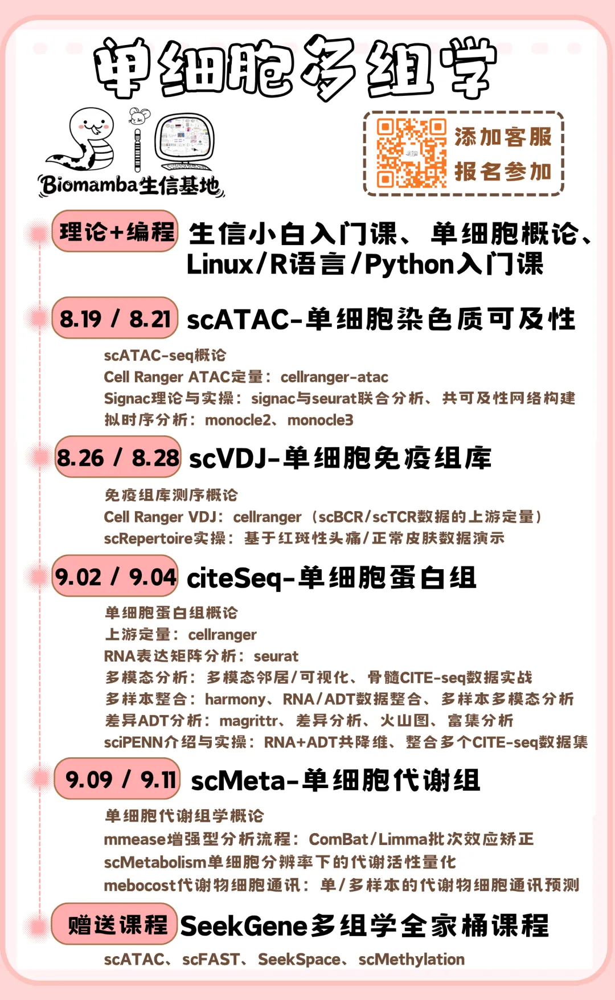

会单细胞分析=生信分析员入场券？
原文：https://mp.weixin.qq.com/s?__biz=MzAwMzIzOTk5OQ==&mid=2247539912&idx=1&sn=a876905c84554f44770a9566f5151049&chksm=9b3c2598ac4bac8ea3657a784c964b2c711afc1ea0bb40f30a173dd8dcf96b7385af588a00c3#rd 合集：求职/求学/招聘

有粉丝表示“不会单细胞分析都没有公司要了”，的确，生信领域中单细胞的活跃度几乎是独树一帜，不过我们也一直开放非单细胞的岗位，如果你有基因组学、微生物组学、代谢组学、表观组学、临床数据挖掘、AIDD、CADD等领域的经历，都欢迎向我们投递简历(1913507043@qq.com)，我们长期开放并不限于以下岗位。请发送简历并备注岗位、全职/兼职、目标薪酬。岗位多多，我们一定会为大家提供一份对得起您能力与工作量的薪酬 ~ 另外，教单细胞，我们是专业的，依旧包教包会包分配

岗位一 Biomamba助理


1、岗位定位：Biomamba公众号助理
2、职责：负责管理客服账号 ，完成与粉丝/合作伙伴的日常对接工作 ，并反馈数据、分析公众号发展现状。组织公众号/生信基地线下线上活动组织筹划（例如：生信基地第一课| 1.5天学会单细胞分析)，公众号文献解读/代码分享类内容计划与输出。3、要求：熟悉本公众号内容。学历要求本科 及以上，有内驱力与自我学习能力。我希望你能够拥有生物信息学背景 ，了解(不是掌握)常见的生物信息学分析，能够熟练的应用各类办公软件(office三件套Word、Excel、PPT；adobe三件套PS、AI、PR)。能够有效的完成与粉丝、合作伙伴、以及Biomamba本人的日常沟通。4、工作地点：南京
岗位二 CADD/AIDD方向讲师
一、岗位要求
1、岗位定位：全职 生信讲师
2、职责：负责承接用户各类生物信息学分析需求，配合Biomamba生信基地图文、视频教程、培训课程制作。3、要求：熟悉本公众号内容。学历要求硕士 及以上，熟悉前沿科研文章中的生信分析，有内驱力与自我学习能力。我希望你能够拥有生物信息学背景 ，熟练掌握 常见CADD、AIDD方向的生物信息学分析与教学(例如Pymol、autodock-vina、alphafold等相关软件工具的使用)，熟练掌握R语言、Python、Linux服务器使用。希望近期能够线下入职 。4、工作地点：南京5、薪资待遇一人一议。
岗位三 单细胞/空间组学讲师
一、岗位要求
1、岗位定位：全职 单细胞/空间组学讲师
2、职责：负责公众号生物信息学内容输出；深度参与Biomamba生信基地图文、视频教程、培训课程制作；负责对内(工作人员)及对外(学员)的生信培训、指导工作。3、要求：熟悉本公众号内容。学历要求硕士 及以上，有内驱力与自我学习能力。我希望你能够拥有生物信息学背景 ，熟练掌握 常见的生物信息学分析(例如单细胞、空间多组学数据分析、AI工具的联合分析)，熟练掌握R语言、Python、Linux服务器使用。希望近期能够线下入职 。4、工作地点：南京5、薪资待遇1w+(能+多少一人一议)，13薪，五险一金另计，不坐班不打卡。 二、单细胞/空转生信工程师自测卷
我们设计了一份单细胞/空转生信工程师自测卷 。Biomamba个人觉得从事相关行业的生信工程师，以下题目需要至少能完成/答对80% 以上，大家可以自测一下。如果考虑来Biomamba生信基地担任单细胞/空转生信工程师，欢迎填写问卷后将简历发送至：1913507043@qq.com 。
在线自测卷(文末阅读原文可直达)：
https://kaoshi.wjx.top/vm/tVlb8JP.aspx#
岗位四 生信基地运营
1、岗位定位：Biomamba公众号运营
2、职责：负责生信基地教学活动计划制定，宣发、推广方案制定。承担公众号文献解读/代码分享类内容计划与输出任务。日常发布并维护Biomamba生信基地媒体矩阵图文/视频内容发布。协助管理客服账号 ，完成与粉丝/合作伙伴的日常对接工作 ，并反馈数据、分析公众号发展现状。组织公众号/生信基地线下线上活动组织筹划（例如：生信基地第一课| 1.5天学会单细胞分析)，3、要求：熟悉本公众号内容。学历要求本科 及以上，有内驱力与自我学习能力。我希望你能够拥有生物信息学背景 ，掌握常见的生物信息学分析，能够熟练的应用各类办公软件(office三件套Word、Excel、PPT；adobe三件套PS、AI、PR)。能够有效的完成与粉丝、合作伙伴、以及我本人的日常沟通。希望近期能够线下入职 。拥有自媒体、剪辑经验者优先。4、工作地点：南京
岗位五 生信工程师
一、岗位要求
1、岗位定位：全职 生信工程师
2、职责：负责公众号代码分析类内容输出；能够完成常见的生物信息学个性化分析内容。3、要求：熟悉本公众号内容。学历要求硕士 及以上，有内驱力与自我学习能力。我希望你能够拥有生物信息学背景 ，熟练掌握 常见的生物信息学分析(尤其是单细胞、空转等组学、AI工具的联合分析)。希望近期能够线下入职 。4、工作地点：南京 二、单细胞/空转生信工程师自测卷
我们设计了一份单细胞/空转生信工程师自测卷 。Biomamba个人觉得从事相关行业的生信工程师，以下题目需要至少能完成/答对80% 以上，大家可以自测一下。如果考虑来Biomamba生信基地担任单细胞/空转生信工程师，欢迎填写问卷后将简历发送至：1913507043@qq.com 。
在线自测卷(文末阅读原文可直达)：
https://kaoshi.wjx.top/vm/tVlb8JP.aspx#
平台介绍
Biomamba生信基地扎根南京 ，专注生物信息学 分析教学与科研。现平台能够提供并不仅局限于 生信培训、科研讲座、个性化生信分析服务、服务器租售等方面的内容。Biomamba生信基地已经稳定运行多年 ，全网拥有超过10w的粉丝 与500w的点击量 。线下生信基地已举办多场活动。因发展需要，现诚聘全职 的小伙伴。先聊聊我和平台的优势(我自认为的)。
1、Biomamba，98年生人，生信基地创始人，男，博士，副研究员，目前的工作内容都直接与我直接对接，相信我们会零代沟 沟通交流。愿意选择加入我们的同学都会被我们会当作伙伴。Biomamba负责保价护航，大家只需安心工作

Biomamba组装椅子ing
2、Biomamba于25年6月博士毕业，现任三甲医院专职科研人员、副研究员，长期从事科研工作 、生信教学。以第一作者/共同第一作者发表SCI论文五篇，N作论文5篇，致谢论文8篇。相信无论是在职场 还是学术 层面都能够为你提供一定的帮助。
3、资金充裕：公司注册资本一百万，具有长期、稳定盈利能力，一定为大家提供一份与你个人能力和工作内容相匹配 的薪酬。
4、工作环境稳定：Biomamba生信基地励志为大家提供至少五十年的科研内容输出，因此全资购置了办公室(位于南京百家湖CBD ，楼下景枫、金鹰、1912、太阳城、百家湖，心情不好下楼逛街也不是不行 )，大平层，朝南 的飘窗，光照充足，保障大家的工作环境和心情一样阳光。还有37.5年产权，完全不用担心 公司/老板跑路。现在公司人均工作机都是海景房 ，人均工作面积可观，目前90平的工作环境里只安排了三位全职同事。
)，大平层，朝南 的飘窗，光照充足，保障大家的工作环境和心情一样阳光。还有37.5年产权，完全不用担心 公司/老板跑路。现在公司人均工作机都是海景房 ，人均工作面积可观，目前90平的工作环境里只安排了三位全职同事。
 给大家配备了茶水吧、咖啡机、零食柜，还有想要的配套设施也欢迎告诉我们
给大家配备了茶水吧、咖啡机、零食柜，还有想要的配套设施也欢迎告诉我们 ：
：
5、没有出差压力，在办公室里就可以完成全部的工作内容。
6、业务稳定：我们全网有近十万 的粉丝用户，我们分享的内容总点击量超五百万。拥有多家战略合作 伙伴。目前Biomamba生信基地处于快速扩张阶段，早期加入的员工能够快速晋升，熟悉工作内容后即可成立独立部门纳新。

欢迎交流

 留一个领取资料、开箱即用的单细胞分析镜像的助手[Biomamba_zhushou]，方便各位随时交流。同时我们也构建了交流群矩阵，欢迎大家一起讨论。
留一个领取资料、开箱即用的单细胞分析镜像的助手[Biomamba_zhushou]，方便各位随时交流。同时我们也构建了交流群矩阵，欢迎大家一起讨论。
 您点的每个赞和在看，我都认真当成了喜欢
您点的每个赞和在看，我都认真当成了喜欢